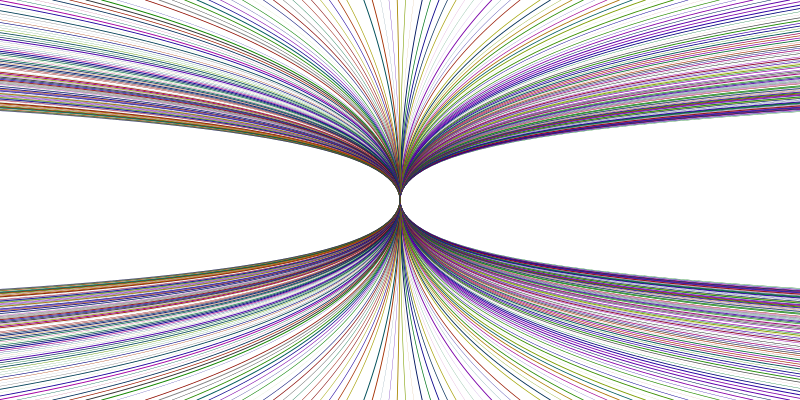

(fifth RacketCon)

27 Sept 2015 in St. Louis (the day after Strange Loop)
RacketCon is a public meeting for everyone interested in Racket: developers, contributors, programmers, educators, and bystanders. It’s an opportunity for all members of the community to come together to share plans, ideas, and enthusiasm. RacketCon will enable the entire Racket community to mingle: to update each other, to exchange ideas, to collaborate, and to help shape the future of Racket.
Register
Via Eventbrite.
Keynote speaker
Confirmed speakers
JIT Compilation for Racket
Rexcel: A Racket-based spreadsheet processing system
Generic Syntax Expanders and Extensible Macros
Code coverage outside of DrRacket
Practical Dependently Typed Racket
Bithoven and the NES Chamber Orchestra
And more to be announced!
Sponsors
Previous RacketCons